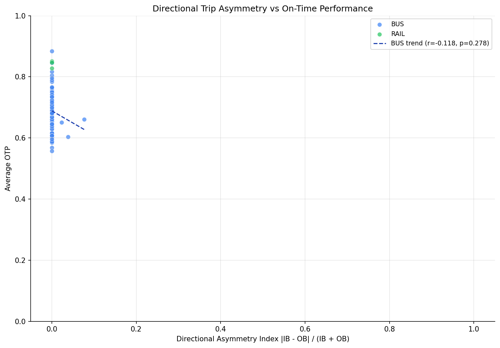

Analysis
11: Directional Asymmetry
Route and Service Drivers
Data Provenance
flowchart LR 11_directional_asymmetry["11: Directional Asymmetry"] t_otp_monthly["otp_monthly"] --> 11_directional_asymmetry 01_data_ingestion["Data Ingestion"] --> t_otp_monthly t_route_stops["route_stops"] --> 11_directional_asymmetry 01_data_ingestion["Data Ingestion"] --> t_route_stops t_routes["routes"] --> 11_directional_asymmetry 01_data_ingestion["Data Ingestion"] --> t_routes d1_11_directional_asymmetry["polars (lib)"] --> 11_directional_asymmetry d2_11_directional_asymmetry["scipy (lib)"] --> 11_directional_asymmetry classDef page fill:#dbeafe,stroke:#1d4ed8,color:#1e3a8a,stroke-width:2px; classDef table fill:#ecfeff,stroke:#0e7490,color:#164e63; classDef dep fill:#fff7ed,stroke:#c2410c,color:#7c2d12,stroke-dasharray: 4 2; classDef file fill:#eef2ff,stroke:#6366f1,color:#3730a3; classDef api fill:#f0fdf4,stroke:#16a34a,color:#14532d; classDef pipeline fill:#f5f3ff,stroke:#7c3aed,color:#4c1d95; class 11_directional_asymmetry page; class t_otp_monthly,t_route_stops,t_routes table; class d1_11_directional_asymmetry,d2_11_directional_asymmetry dep; class 01_data_ingestion pipeline;
Findings
Findings: Directional Asymmetry
Summary
The correlation between directional trip imbalance and OTP is weak and not statistically significant (r = -0.12, p = 0.26). After correcting methodology issues in the original analysis, PRT routes show very little directional asymmetry, and what asymmetry exists does not predict OTP.
Key Numbers
- All routes: Pearson r = -0.12 (p = 0.26, n = 90)
- Bus only: Pearson r = -0.12 (p = 0.28, n = 87)
- Bus only: Spearman r = -0.17 (p = 0.11)
- Maximum asymmetry index: 0.077 (Route 19L)
Methodology Note
The original analysis used SUM(trips_wd) per direction and excluded stops with direction = 'IB,OB'. This inflated asymmetry because IB,OB stops (common on shared corridors) were dropped rather than counted in both directions. Routes 11 and 60 appeared 100% asymmetric because their IB stops were all coded as IB,OB. The corrected analysis uses MAX(trips_wd) per direction (peak frequency, not total stop-visits), includes IB,OB stops in both directions, and excludes routes present in only one direction.
Most Asymmetric Routes
| Route | IB Trips | OB Trips | Asymmetry | OTP |
|---|---|---|---|---|
| 19L - Emsworth Limited | 7 | 6 | 0.077 | 66.0% |
| 67 - Monroeville | 27 | 25 | 0.038 | 60.4% |
| 29 - Robinson | 22 | 21 | 0.023 | 65.1% |
Observations
- With corrected methodology, PRT routes are remarkably balanced directionally. The most asymmetric route (19L) has only a 7.7% imbalance (7 vs 6 trips), and most routes are at or near 0%.
- The previous finding of routes with 100% asymmetry (Routes 11 and 60) was a data artifact caused by excluding bidirectional (IB,OB) stops. These routes are excluded in the corrected analysis because they lack separate IB and OB data after the fix.
- The slight negative correlation (r = -0.12) suggests marginally worse OTP with more asymmetry, but the effect is too small and not statistically significant.
Conclusion
Directional imbalance does not predict OTP. PRT routes are sufficiently balanced that this is not a measurable factor in schedule adherence. The hypothesis that scheduling asymmetry creates operational strain is not supported by this data.
Caveats
- The analysis uses peak trip frequency (
MAX(trips_wd)) at a single stop per direction, which may not capture all scheduling nuances. - The
route_stopsdata reflects current service, not historical. Historical asymmetry may have differed. - Including IB,OB stops in both directions can compress the asymmetry index toward zero when an IB,OB stop has the highest
trips_wdfor a route. In that case, both IB and OB MAX values equal the same number, mechanically forcing asymmetry to zero. This is a known limitation -- the alternative (excluding IB,OB stops) creates the opposite bias by dropping data. - Routes with fewer than 12 months of OTP data are excluded.
- Three correlation tests were run (Pearson all-routes, Pearson bus-only, Spearman bus-only) without multiple-comparison correction. Since all three are non-significant (smallest p = 0.11), correction would not change any conclusion.
Review History
- 2026-02-11: RED-TEAM-REPORTS/2026-02-11-analyses-01-05-07-11.md -- 7 issues (1 significant). Updated METHODS.md to correctly describe IB,OB handling (include in both, not exclude); corrected "total trips" to "peak frequency (MAX)"; added minimum-month filter (HAVING COUNT >= 12); added NULL filter for trips_wd; replaced manual regression with scipy.stats.linregress; documented IB,OB compression effect; noted multiple-test caveat.
Output
Generated tabular or textual data artifact produced by this analysis.

Generated chart image produced by this analysis.
Methods
Methods: Inbound vs Outbound Asymmetry
Question
Does a structural directional imbalance in trip frequency correlate with worse OTP? Routes with significantly different IB vs OB trip counts may face operational challenges.
Approach
- For each route, compute peak IB frequency and peak OB frequency (
MAX(trips_wd)) fromroute_stops. Stops withtrips_wd IS NULLare excluded. - Include stops with
IB,OBdirection in both IB and OB counts to avoid exclusion bias. - Compute an asymmetry index: abs(IB_trips - OB_trips) / (IB_trips + OB_trips).
- Compute average OTP per route from
otp_monthly, requiring at least 12 months of data (HAVING COUNT(*) >= 12). - Correlate asymmetry with average OTP using Pearson (all routes), Pearson (bus-only), and Spearman (bus-only).
- Investigate routes with highest asymmetry.
Data
| Name | Description | Source |
|---|---|---|
route_stops |
Directional trip counts | prt.db table |
otp_monthly |
OTP per route | prt.db table |
routes |
Route metadata | prt.db table |
Output
output/directional_asymmetry.csv-- per-route directional trip breakdown and OTPoutput/directional_asymmetry.png-- scatter plot of asymmetry vs OTP
Sources
| Name | Type | Description |
|---|---|---|
| otp_monthly | table | Monthly OTP values by route. Produced by Data Ingestion. |
| route_stops | table | Route-stop bridge with service frequency metrics. Produced by Data Ingestion. |
| routes | table | Route dimension table. Produced by Data Ingestion. |
| polars | dependency | Dataframe library used for fast tabular data transformations and aggregation. |
| scipy | dependency | Scientific computing library used for statistical tests and numerical routines. |